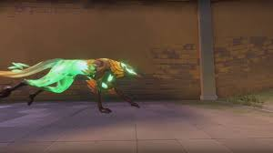
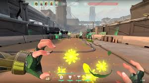

SKYE
Função: Iniciador
Biografia: Vinda da Austrália, Skye e seu bando de feras desbravam territórios perigosos. Com suas criações que desafiam a natureza, ela lidera o caminho para sua equipe e corta o avanço inimigo.
CRIATURAS DA NATUREZA
LUZ DESBRAVADORA

Q - Um falcão que pode ser controlado para cegar inimigos no caminho.
LUZ GUIADORA
E - Uma fera que cura aliados na linha de visão (cura até 100HP).
REFLORESCER
C - Envia um lobo que pode ser detonado para causar concussão.
RASTREADORES

X - Invoca 3 rastreadores que caçam inimigos próximos.
ESTATÍSTICAS DE CURA
Luz Guiadora:
- Cura 15HP por segundo
- Duração: 4 segundos
- Raio: 15m
- Pode curar múltiplos aliados
Dicas de Cura:
- Priorize aliados com baixa vida
- Use em combinação com pushes
- Não cura através de paredes
TÁTICAS DE SUPORTE
- Use o falcão para limpar ângulos perigosos
- O lobo é ótimo para desalojar inimigos entocados
- Rastreadores revelam posições mesmo através de paredes
- Você pode redirecionar o falcão pressionando Q novamente
- Comunique curas para evitar desperdício